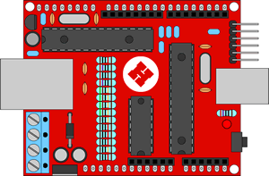
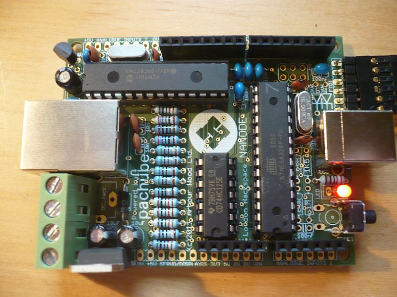
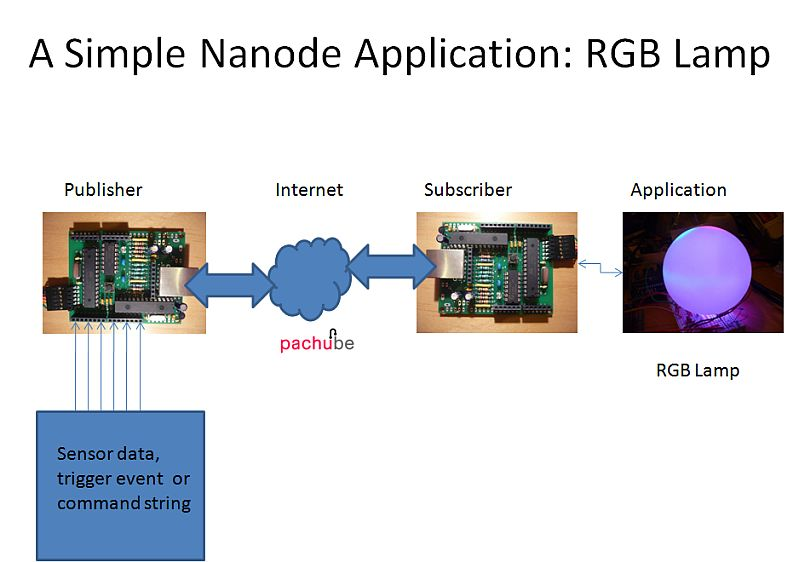

I was part of the Nanode Dev team. The main inventor of the Nanode Hardware was Ken Boak. Nanode is an open source Arduino-like board that has in-built web connectivity. It is a low cost platform for creative development of web connected ideas. Languages: C
In Ken's words: "When I designed the hardware for Nanode, I worked to a very tight budget. It had to appeal to college students, amateurs and hackers.
Working in association with the London Hackspace I fixed the price (for members) at £18 ($30) and we initially built a batch of 100 units. We ran a couple of weekend workshops and built them up from kits. Shipping costs were not included – and we have seen a rise in some of the IC prices since then.
That was in early June. Since then we have produced a total of 550 pcbs so far – and shipped 450 of them.
Nanode is now available in the US, exclusively from http://wickeddevice.com in upstate New York.
Wicked Device will soon be making their own run of pcbs ready on the market in time for the NYC Maker Faire.
From the start, Nanode had to be simple and straightforward to build – with conventional through hole components and socketed ICs. Following our pictorial assembly guide, I have seen dozens of Nanodes built by beginners – often their first real soldering project.
We are not trying to compete in any way with 32bit ARM devices – but we wanted a board that worked like an Arduino with a few extra features, such as ethernet connectivity and easy wireless and wired networking.
Nanode is intended as a starter kit for web connected devices such as remote control, home automation and smart sensors. Later on there will be other variants, with built in wireless and available as a very compact SMT module.
Nanode does not yet offer PoE, and you will need a FTDI or similar USB to serial adaptor cable to program it. In that respect it is similar to the standard version of the Ethernet Arduino – but a fraction of the price.
Nanode is looking for resellers in Europe and Asia. If you want to get involved either commercially or join in with collaborative development, please contact me via @Monsonite on Twitter.
Ken"

Nanode
Project Details / Background
The Nanode project, launched at London hackspace, is an open source Arduino-like board with built-in web connectivity (IoT). It can connect to various wireless, wired, and ethernet interfaces, allowing for the development of web-based sensor and control systems. It provides web access to six analogue sensor lines and six digital I/O lines, making it ideal for hacking projects. The Nanode is affordable, costing under £20 as an easy-to-build kit. It has gained popularity and has been replicated in hackerspaces and workshops across Europe. Additionally, it has been featured on Hackaday, a popular online platform for DIY electronics projects.
Image Gallery

A fully populated nanode board running arduino blink sketch. It lives!

An example of running Nanode with the Pachube pub/sub service storing sensor readings and actuating an RGB LED / physical notifier.
 Another PCB variant, Nanode in red.
Another PCB variant, Nanode in red.